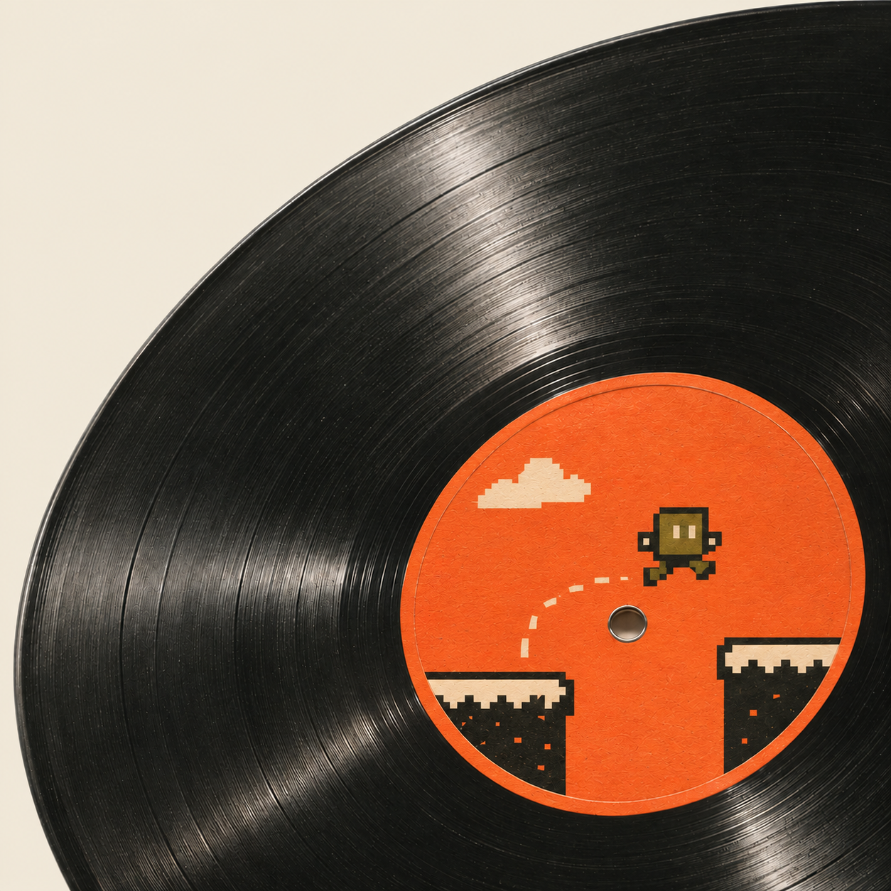

Bring something that sounds like your game.
Your own short recordings, licensed sound effects, or the included Kenney CC0 kit. Keep the original files and source notes with the project.
Start with the working example
Turn your game sounds into a tested, portable sound kit.
Your recordings. Meta-shaped
behavior. No model during play.
Loading the recorded comparison.
Your own short recordings, licensed sound effects, or the included Kenney CC0 kit. Keep the original files and source notes with the project.
Start with the working exampleMake footsteps follow movement, shape a pickup, quiet the wind. Meta edits one unlocked layer; saved gameplay checks can reject a change that breaks another run.
See what a check protectsExport WAV cues and a Phaser audio sprite, or keep the live JavaScript component with its adapter and repeatable checks. Gameplay needs no model.
Choose your export| Delivery | What travels with it |
|---|---|
| WAV cue kit | 11 static cues with source notes. Choose a Phaser sprite and browser scene, or a Godot adapter and native cue scene. Forward your game events; other engines use manual WAV import. |
| Live component + checks | Dynamic game bindings, wind and walking cadence, an editable project, captured input runs and an offline Node verifier. |
The comparison above uses the same recorded cue and game inputs. Before uses classic playback; Clean uses band-limited sampling and a transparent low-level output stage. Both are matched by whole-clip RMS with a shared peak ceiling.
A subtle difference is expected when a source already sounds clean. These checks measure signal behavior, not what you will prefer. SoundRig configures recordings; it does not generate new sound recordings or music.
Read the sound-quality details